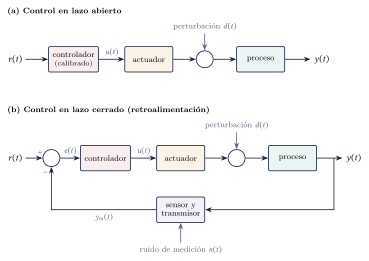
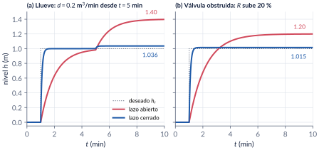
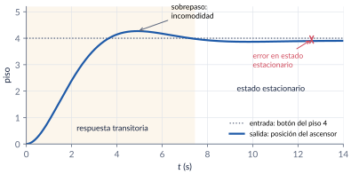
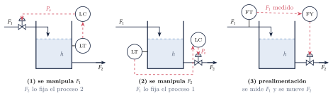
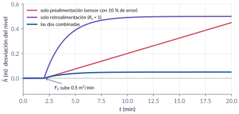
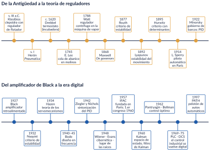
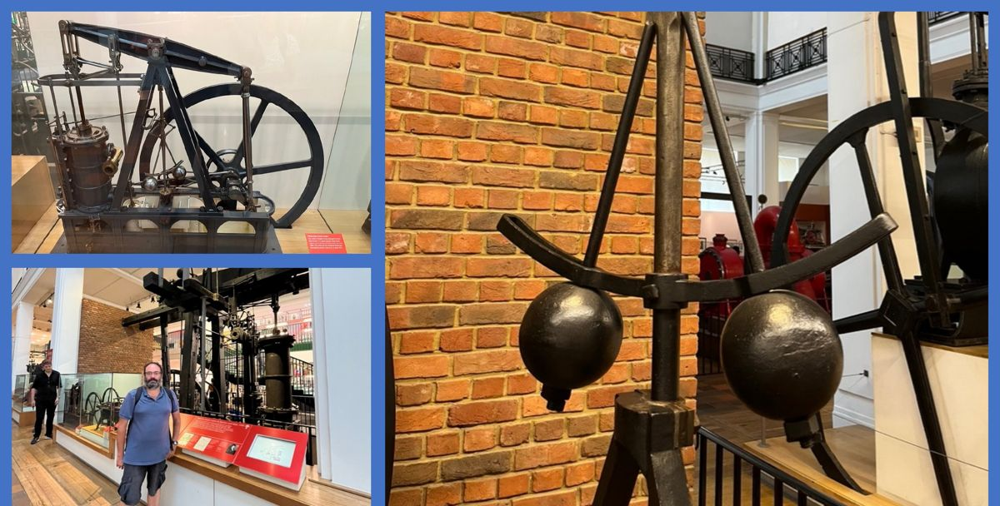
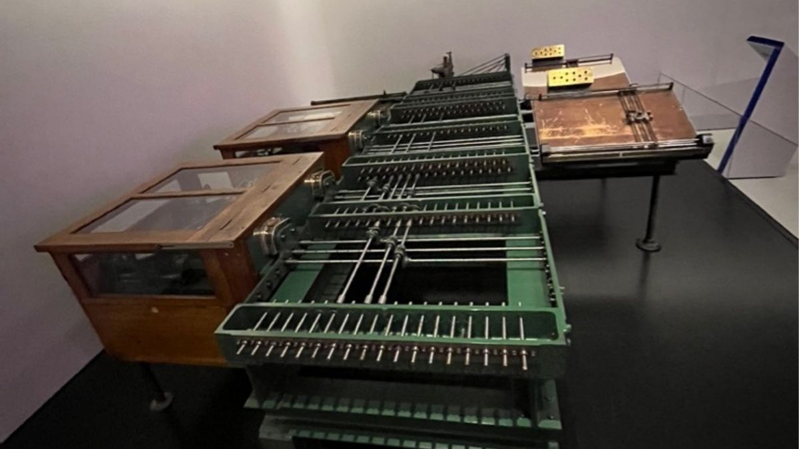

1. Introducción: el análisis de sistemas de control
Semana 1 · una clase
¿Qué quiere decir analizar un sistema de control? En esta parte fijamos el vocabulario del curso, vemos con un tanque qué gana y qué cuesta la retroalimentación, aprendemos a plantear un problema de control y recorremos dos mil años de historia: de la clepsidra de Ktesibios al regulador de Watt, de Maxwell a Kalman. Terminamos con el mapa del curso.
Al terminar esta parte usted podrá
- Explicar qué se entiende por análisis, sistema y control, y qué hace la retroalimentación.
- Distinguir el control en lazo abierto del control en lazo cerrado y medir, con un ejemplo, qué gana y qué cuesta retroalimentar.
- Plantear un problema de control: objetivos, variables manipuladas y perturbaciones, mediciones, restricciones y estructura del controlador.
- Ubicar en el tiempo las ideas del curso y saber dónde leer más.
- Saber cómo están organizados el curso, las notas, los códigos y esta página.
Ruta de la clase
| Bloque | Qué se ve | Handout | Scripts |
|---|---|---|---|
| 1 | Análisis, sistema, control; retroalimentación; DUFF | §1.1 | — |
| 2 | Lazo abierto y lazo cerrado: el tanque con lluvia; malla abierta y lazo abierto | §1.2 | C1_Ej1, crearModelo_TanqueLazos |
| 3 | Desempeño y diseño: el ascensor | §1.3 | C1_Ej2 |
| 4 | Plantear un problema de control: la ducha y el tanque de almacenamiento | §1.4 | C1_Ej3 |
| 5 | Historia del control (lectura) y mapa del curso | §1.5–1.6 | — |
Lo esencial, en una página
Sistema de control y retroalimentación
Un sistema de control administra el comportamiento de otro sistema para que una salida siga una referencia o rechace perturbaciones. Retroalimentar es medir la variable controlada, compararla con lo deseado y actuar sobre el error. Richard Murray lo resumió así: control = dynamics, uncertainty, feedforward, feedback (DUFF).

Lo que compra la retroalimentación
En el tanque \(0.5\,\dot h=u+d-h/R\), calibrado para llegar a \(1\) m, la lluvia sube el nivel a \(1.40\) m en lazo abierto y a \(1.036\) m en lazo cerrado con \(K_c=5\): once veces menos, porque \(1+KK_c=11\). El lazo cerrado además responde once veces más rápido. El precio: un caudal inicial de \(5.5\) m³/min en lugar de \(0.5\).

Tres nombres parecidos
Control en lazo abierto es una estrategia sin retroalimentación. Malla abierta \(G'(s)=G(s)H(s)\) es lo que recorre una señal al dar la vuelta a un lazo cerrado (estabilidad, Bode). Lazo abierto \(G_{OL}(s)\) es la función del lazo reescrito con retroalimentación unitaria (tipo y error). En inglés, las tres se llaman open loop.
Desempeño, análisis y diseño
El desempeño se mide con la estabilidad, la respuesta transitoria y el error en estado estacionario. El análisis determina el desempeño de un sistema dado; el diseño lo logra o lo modifica.

Cómo plantear un problema de control
Objetivos · entradas (manipuladas y perturbaciones) · salidas (medidas y no medidas) · restricciones (duras y blandas) · operación (continua o por lotes) · seguridad, ambiente y economía · estructura del controlador (retroalimentación, prealimentación o ambas).


Explorador: lazo abierto vs lazo cerrado
El tanque del ejemplo 1.1. Mueva la ganancia del controlador, la lluvia, la resistencia real de la válvula de salida y el caudal máximo que puede dar la válvula de entrada.
Retos con el explorador
- Con los valores iniciales, compruebe los números del handout: \(1.40\) y \(1.036\) m.
- ¿Qué \(K_c\) hace que la lluvia mueva el nivel menos de 1 cm? ¿Cuánto vale el pico de \(u\)?
- Ponga \(K_c=20\) y limite el caudal a \(2\) m³/min: ¿qué pasa con la rapidez? ¿Y con el valor final?
- Ponga \(K_c=0\): ¿qué estrategia tiene? Cambie \(R\) y observe.
Historia del control

El control como tecnología tiene más de dos mil años: el regulador de flotador de la clepsidra de Ktesibios (siglo III a.C.) ya juntaba sensor, comparador y actuador. El regulador centrífugo que Watt adaptó a la máquina de vapor hacia 1788 llevó a Maxwell (1868) a la primera teoría de estabilidad, completada por Routh (1877), Vyshnegradskii (1876) y Hurwitz (1895). En el siglo XX llegaron los pilotos automáticos de Sperry, el PID de Minorsky (1922), los controladores neumáticos industriales, el amplificador retroalimentado de Black (1927), el criterio de Nyquist (1932) y los diagramas de Bode (1940–45). Después de la guerra, Wiener, Evans, la transformada \(z\), la fundación de IFAC (1957) y, con la carrera espacial, el espacio de estado de Kalman y el control óptimo de Pontryagin y Bellman. El handout (§1.5) cuenta la historia completa, con la referencia original de cada idea.


Códigos de esta parte
Los bloques salen directamente de los archivos del repositorio. Ejecute antes iniciarCurso.
Lazo abierto calibrado (§1.2).
Area = 0.5; R = 2; % m^2 y min/m^2 -> K = R = 2, tau = Area*R = 1 min
Kn = 2; % ganancia NOMINAL con la que se calibró
t = linspace(0, 10, 2001)'; % minutos
hr = 1.0*(t >= 1); % nivel deseado: 1 m desde t = 1 min
d = 0.2*(t >= 5); % lluvia desde t = 5 min
% Lazo abierto: u = hr/Kn (nadie mira el nivel)
ola = ss(-1/(Area*R), [1/(Area*Kn) 1/Area], 1, 0); % entradas [hr d]
h_ab = lsim(ola, [hr d], t);
fprintf('Lazo abierto, lluvia: h(10) = %.3f m\n', h_ab(end));Lazo cerrado y el factor \(1+KK_c\).
Kc = 5; % ganancia del controlador proporcional, m^2/min
% Lazo cerrado: u = hr/Kn + Kc (hr - h)
% Area dh/dt = -(1/R + Kc) h + (1/Kn + Kc) hr + d
lc = @(Rr) ss(-(1/Rr + Kc)/Area, [(1/Kn + Kc)/Area 1/Area], 1, 0);
h_ce = lsim(lc(R), [hr d], t);
u_ce = hr/Kn + Kc*(hr - h_ce);
fprintf('Lazo cerrado, lluvia: h(10) = %.4f m (factor 1+K*Kc = %g)\n', h_ce(end), 1 + R*Kc);
% Válvula obstruida: R real = 2.4, sin lluvia (la calibración sigue con Kn = 2)
Rr = 2.4;
h_ab2 = lsim(ss(-1/(Area*Rr), [1/(Area*Kn) 1/Area], 1, 0), [hr 0*d], t);
h_ce2 = lsim(lc(Rr), [hr 0*d], t);
fprintf('Obstrucción: abierto %.3f m, cerrado %.4f m\n', h_ab2(end), h_ce2(end));
fprintf('tau lazo cerrado = %.2f s; u(1+) = %.2f m^3/min\n', 60*Area*R/(1 + R*Kc), 1/Kn + Kc); % en el instante del escalónTransitorio y error en estado estacionario (§1.3).
zeta = 0.6; wn = 0.8; kg = 0.975; % kg < 1 produce el error final
piso = 4;
T = piso*kg*tf(wn^2, [1 2*zeta*wn wn^2]);
S = stepinfo(T); % criterio por defecto: 2 %
fprintf('Sobrepaso %.2f %%, tp = %.2f s, ts = %.2f s\n', S.Overshoot, S.PeakTime, S.SettlingTime);
fprintf('Valor final %.2f pisos -> error %.2f piso\n', dcgain(T), piso - dcgain(T));Prealimentación, retroalimentación y las dos juntas (§1.4).
A2 = 2; dF1 = 0.5; eps = 0.10; Kc = 1;
t = linspace(0, 20, 2001)';
F1 = dF1*(t >= 2); % desviación del caudal de entrada
% dh/dt = (F1 - F2)/A2, con F2 = ff*(1-eps)*F1 + fb*Kc*h
modelo = @(ff, fb) ss(-fb*Kc/A2, (1 - ff*(1 - eps))/A2, 1, 0);
h_ff = lsim(modelo(1, 0), F1, t);
h_fb = lsim(modelo(0, 1), F1, t);
h_am = lsim(modelo(1, 1), F1, t);
fprintf('Solo prealimentación: h(20) = %.3f m (deriva %.4f m/min)\n', h_ff(end), dF1*eps/A2);
fprintf('Solo retroalimentación: h(20) = %.3f m\n', h_fb(end));
fprintf('Combinadas: h(20) = %.4f m\n', h_am(end));verificarCap01 comprueba los números clave del capítulo.
function verificarCap01()
% VERIFICARCAP01 Pruebas automáticas de los números del capítulo 1.
% >> verificarCap01
% (Los mismos números se verificaron con python-control en
% herramientas/cap01_numeros.py.)
fallas = 0; n = 0;
function revisar(nombre, valor, esperado, tol)
n = n + 1;
if abs(valor - esperado) <= tol
fprintf(' ok %-40s %12.4f\n', nombre, valor);
else
fprintf(2, ' FALLA %-39s %12.4f (esperado %g +- %g)\n', nombre, valor, esperado, tol);
fallas = fallas + 1;
end
end
fprintf('1.2 Tanque en lazo abierto y cerrado\n');
Area = 0.5; R = 2; Kn = 2; Kc = 5;
t = linspace(0, 30, 6001)'; hr = ones(size(t)); d = 0.2*ones(size(t));
ola = @(Rr) ss(-1/(Area*Rr), [1/(Area*Kn) 1/Area], 1, 0);
lc = @(Rr, kc) ss(-(1/Rr + kc)/Area, [(1/Kn + kc)/Area 1/Area], 1, 0);
y = lsim(ola(R), [hr d], t); revisar('abierto con lluvia', y(end), 1.4, 1e-3);
y = lsim(lc(R, Kc), [hr d], t); revisar('cerrado con lluvia (Kc = 5)', y(end), 11.4/11, 1e-4);
y = lsim(ola(2.4), [hr 0*d], t); revisar('abierto con R = 2.4', y(end), 1.2, 1e-3);
y = lsim(lc(2.4, Kc), [hr 0*d], t); revisar('cerrado con R = 2.4', y(end), 2.4*5.5/13, 1e-4);
y = lsim(lc(R, 1), [hr d], t); revisar('cerrado, lluvia, Kc = 1', y(end), 3.4/3, 1e-4);
y = lsim(lc(R, 10), [hr d], t); revisar('cerrado, lluvia, Kc = 10', y(end), 21.4/21, 1e-4);
revisar('tau lazo cerrado (s)', 60*-1/pole(lc(R, Kc)), 60/11, 1e-6);
revisar('Kc mínimo para < 1 cm', (0.4/0.01 - 1)/2, 19.5, 1e-9);
y = lsim(ss(-(1/R + Kc)/Area, [Kc/Area 1/Area], 1, 0), [hr 0*d], t);
revisar('sin calibración: RKc/(1+RKc)', y(end), 10/11, 1e-4);
fprintf('1.3 Ascensor\n');
T = 4*0.975*tf(0.64, [1 0.96 0.64]);
S = stepinfo(T); % criterio por defecto: 2 %
revisar('sobrepaso (%)', S.Overshoot, 9.48, 0.02);
revisar('tiempo pico (s)', S.PeakTime, pi/(0.8*0.8), 0.02);
revisar('tiempo de establecimiento (s)', S.SettlingTime, 7.43, 0.05);
revisar('valor final', dcgain(T), 3.9, 1e-9);
fprintf('1.4 Prealimentación y ganancia de proceso\n');
A2 = 2; eps = 0.1; t = linspace(0, 18, 3601)'; F1 = 0.5*ones(size(t));
y = lsim(ss(0, eps/A2, 1, 0), F1, t); revisar('deriva en 18 min', y(end), 0.45, 1e-3);
t = linspace(0, 60, 6001)'; F1 = 0.5*ones(size(t));
y = lsim(ss(-1/A2, 1/A2, 1, 0), F1, t); revisar('solo retroalimentación', y(end), 0.5, 1e-4);
y = lsim(ss(-1/A2, eps/A2, 1, 0), F1, t); revisar('combinadas', y(end), 0.05, 1e-4);
revisar('ganancia 10 C / 0.5 kW', 10/0.5, 20, 0);
fprintf('\n%d de %d pruebas pasaron.\n', n - fallas, n);
endModelo de Simulink
El modelo se construye por código
| Script | Modelo | Para qué |
|---|---|---|
crearModelo_TanqueLazos.m |
el mismo tanque en lazo abierto (ganancia Calibracion) y en lazo cerrado (Kc), con lluvia activable (Lluvia) |
ajustar a mano la calibración, encender la lluvia, intentar compensarla a mano y comparar con la retroalimentación |
Corra el script y se crea el .slx.
Pausas activas
1. Manejar un carro
Cuando usted conduce por una carretera con curvas, ¿quién hace de sensor, de controlador y de actuador?
Respuesta
Los ojos son el sensor; el cerebro compara la posición con el centro del carril (la referencia) y decide; los brazos y el timón son el actuador. El viento y los baches son perturbaciones. Si cierra los ojos, el lazo se abre.2. Precisión a la fuerza
¿Qué \(K_c\) hace falta para que la lluvia mueva el nivel del tanque menos de 1 cm?
Respuesta
\(0.4/(1+2K_c)<0.01\), es decir \(K_c>19.5\). Con \(K_c=20\), el caudal inicial es \(20.5\) m³/min: cuarenta veces el de lazo abierto.3. Ktesibios, Watt y Black
¿Qué tienen en común la clepsidra, el regulador de Watt y el amplificador de Black?
Respuesta
Los tres son lazos cerrados con retroalimentación negativa: el flotador, las bolas y la red \(\beta\) miden la salida; y la válvula de entrada, la válvula de vapor y los tubos de vacío actúan.Problemas
El handout trae 8 problemas (clasificar lazos, el tanque en detalle con saturación, plantear un problema de control, ganancia del proceso, prealimentación, moderadores y reguladores de Maxwell, el ascensor y un ensayo histórico), con soluciones seleccionadas.
Para leer más
- K. J. Åström y P. R. Kumar, “Control: a perspective”, Automatica 50(1), 2014.
- O. Mayr, The Origins of Feedback Control, MIT Press, 1971.
- S. Bennett, A History of Control Engineering (1800–1930 y 1930–1955), IET.
- C. C. Bissell, “A history of automatic control”, Springer Handbook of Automation, 2009.
- D. S. Bernstein, “A student’s guide to classical control”, IEEE Control Systems Magazine 17(4), 1997.
- N. Quijano y C. Cotrino, “Control and automation evolution in Colombia”, CCAC 2023.
Correcciones respecto a la versión anterior
Watt no patentó el regulador centrífugo (Mead lo patentó para molinos en 1787). Sperry voló en París en 1914, no en 1912. Minorsky propuso el PID y analizó su estabilidad, sin ubicación de polos. Bode publicó en 1940–45 (1934 es la teoría de servomecanismos de Hazen). IFAC se fundó en 1957 con 18 países; RIAS en 1955. Stabilog, Dantzig y Vannevar, bien escritos. \(G(s)H(s)\) es la malla abierta. El ejemplo del tanque ahora compara lazo abierto y cerrado con números verificados.